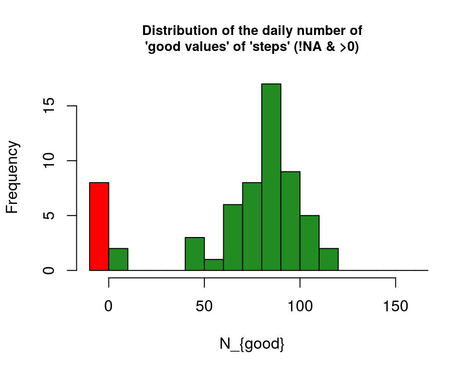
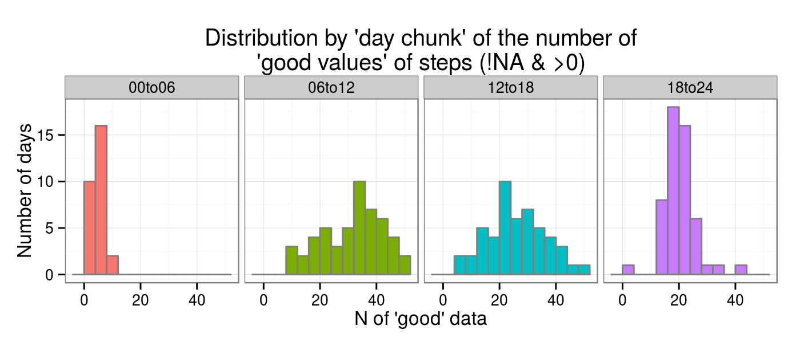
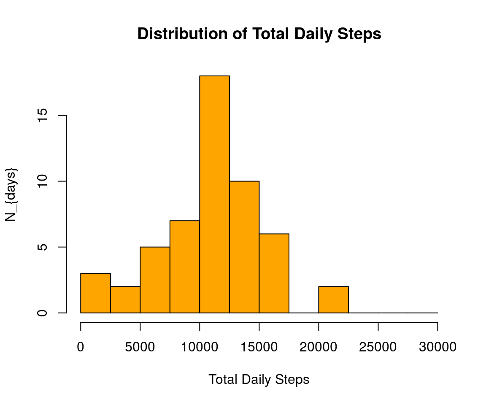
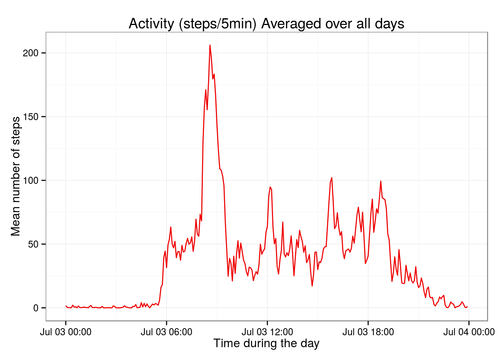
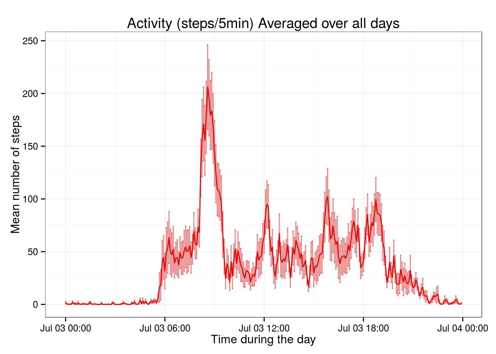
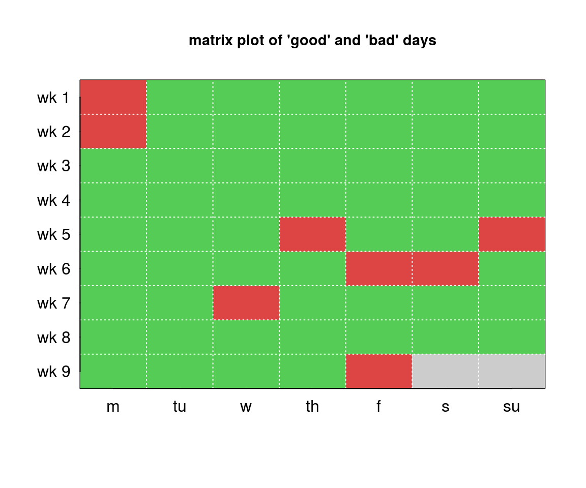
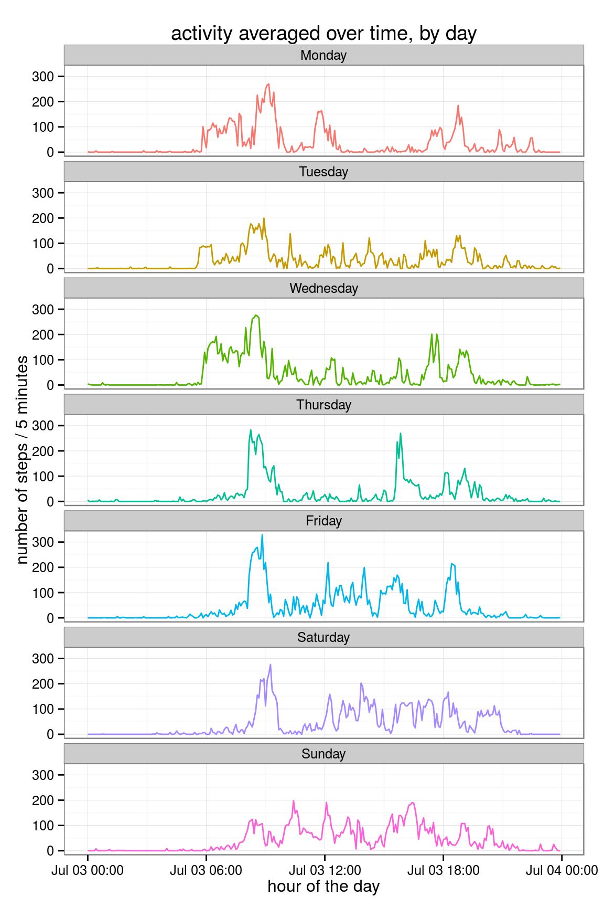
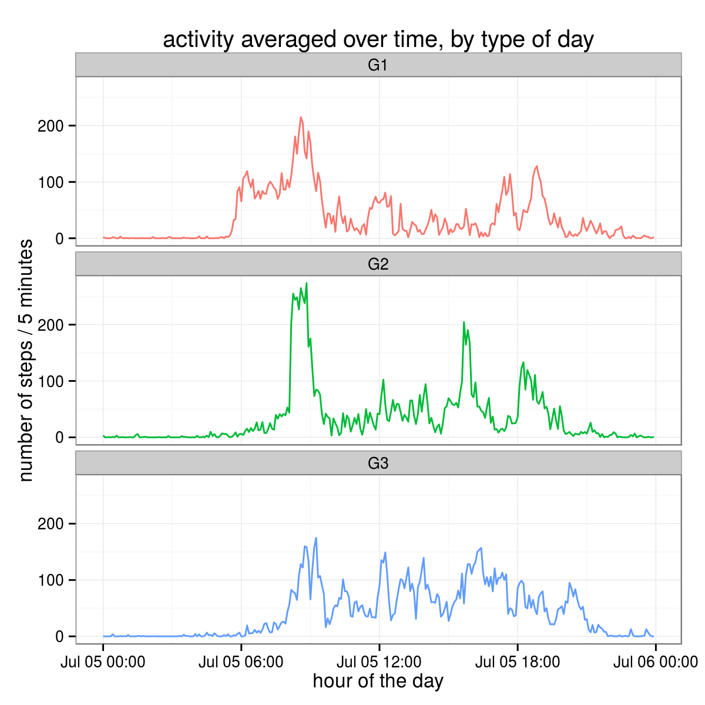
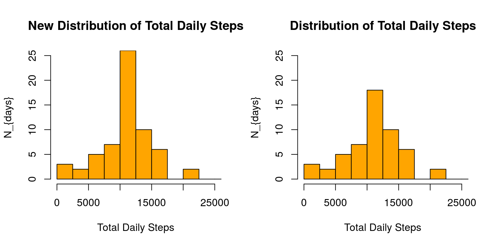
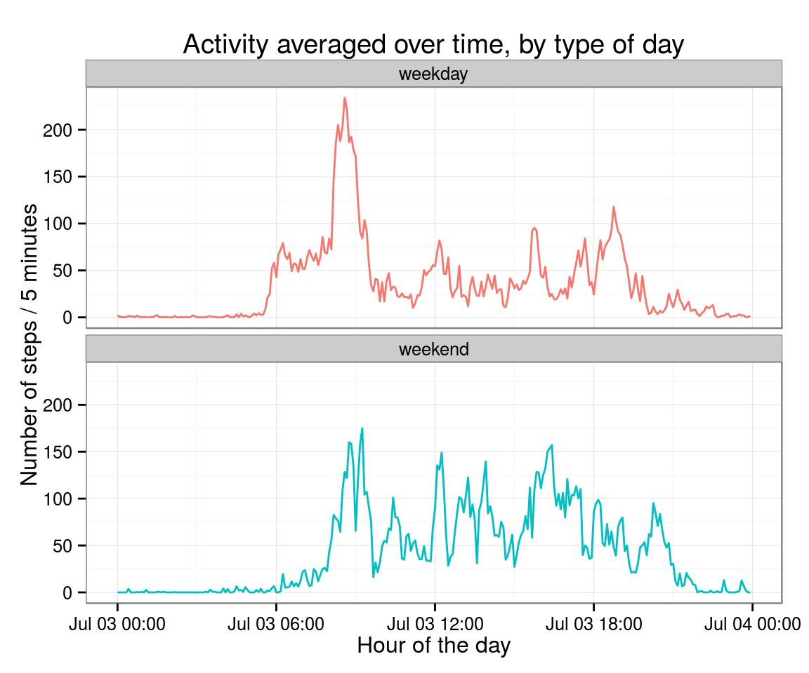

Report for the first assignment of the Reproducible Research course of the Coursera/JHSPH Data Science Specialization.
The source files are posted on GitHub.
Libraries needed for data processing and plotting:
library("ggplot2")
library("plyr")
library("reshape2")
library("xtable")It is now possible to collect a large amount of data about personal movement using activity monitoring devices such as a Fitbit, Nike Fuelband, or Jawbone Up.
These type of devices are part of the “quantified self” movement – a group of enthusiasts who take measurements about themselves regularly to improve their health, to find patterns in their behavior, or because they are tech geeks. But these data remain under-utilized both because the raw data are hard to obtain and there is a lack of statistical methods and software for processing and interpreting the data.
This assignment makes use of data from a personal activity monitoring device.
This device collects data at 5 minute intervals through out the day. The data consists of two months of data from an anonymous individual collected during the months of October and November, 2012 and include the number of steps taken in 5 minute intervals each day.
NA in this dataset look like? How many are there and how are they distributed?The data were downloaded from the course web site:
main <- read.csv("data/activity.csv.gz")The dataset comprises 17568 observations of the following variables:
NA)We added a few new variables related to time:
date and interval (reformatted).interval is converted to a HH:MM format, of class POSIXct (because of ggplot).weekdays() are extracted from fullTime.main$fullTime <- strptime(paste(main$date,sprintf("%04d",main$interval),sep=" "), "%F %H%M")
main$hour <- as.POSIXct(strptime(sprintf("%04d",main$interval), "%H%M"))
main$dayName <- weekdays(main$fullTime)
day.names <- c("Monday","Tuesday","Wednesday","Thursday","Friday","Saturday","Sunday")
main$dayFactor <- factor(main$dayName, levels=day.names, ordered=TRUE)
main$dayFlag <- factor(ifelse(as.integer(main$dayFactor)<=5,0,1),labels=c("weekday","weekend"))
chunkTimes <- strptime(c("00:00:00","06:00:00","12:00:00","18:00:00","23:59:59"), "%H:%M:%S")
main$chunk <- cut(main$hour, breaks=chunkTimes, labels=c("00to06","06to12","12to18","18to24"))The resulting data frame has the following structure:
str(main)
# 'data.frame': 17568 obs. of 9 variables:
# $ steps : int NA NA NA NA NA NA NA NA NA NA ...
# $ date : Factor w/ 61 levels "2012-10-01","2012-10-02",..: 1 1 1 1 1 1 1 1 1 1 ...
# $ interval : int 0 5 10 15 20 25 30 35 40 45 ...
# $ fullTime : POSIXlt, format: "2012-10-01 00:00:00" "2012-10-01 00:05:00" "2012-10-01 00:10:00" ...
# $ hour : POSIXct, format: "2015-08-03 00:00:00" "2015-08-03 00:05:00" "2015-08-03 00:10:00" ...
# $ dayName : chr "Monday" "Monday" "Monday" "Monday" ...
# $ dayFactor: Ord.factor w/ 7 levels "Monday"<"Tuesday"<..: 1 1 1 1 1 1 1 1 1 1 ...
# $ dayFlag : Factor w/ 2 levels "weekday","weekend": 1 1 1 1 1 1 1 1 1 1 ...
# $ chunk : Factor w/ 4 levels "00to06","06to12",..: 1 1 1 1 1 1 1 1 1 1 ...NA and valid steps entriesA few basic checks of the data completeness by day, creating a data frame with:
NA.NA.… summarized by day.
daily.stats <- ddply(main, .(date), summarize,
nNA = sum(is.na(steps)),
nGood.All = sum(!is.na(steps)),
nGood.Not0 = sum(!is.na(steps) & steps>0),
nSteps = sum(steps))
table(daily.stats$nNA)
#
# 0 288
# 53 8NA in each day reveals that all missing values are concentrated in 8 days, for which in fact there are no data (i.e. 288 NA).The following plot illustrates this latter point: it show the distribution of the number of intervals with steps>0 in a day.
The red bin comprises the days without any valid value (8). The distribution is centered at around 80, which is about 28% of the intervals in each day (288).
hist(daily.stats$nGood.Not0, xlim=c(-10,160), breaks=seq(-10,305,by=10),
col=c("red",rep("forestgreen",20)), cex.main=0.85,
main="Distribution of the daily number of 'good values' of 'steps' (!NA & >0)",
xlab="Number of 'good' intervals")
If we split each day in four time intervals (the chunk factor) the summary of good and non-zero values not surprisingly shows a very low fraction for the night period and higher fractions for the morning and afternoon period.
tmp.df <- ddply(main, .(chunk), summarize,
Ntot = length(steps[!is.na(steps)]),
Ndata.gt.0 = sum(!is.na(steps) & steps>0),
fraction = sprintf("%6.2f %%",sum(!is.na(steps) & steps>0)/length(steps[!is.na(steps)])*100.))| chunk | N.tot | N.good | pct.good |
|---|---|---|---|
| 00to06 | 3816 | 148 | 3.88 % |
| 06to12 | 3816 | 1642 | 43.03 % |
| 12to18 | 3816 | 1377 | 36.08 % |
| 18to24 | 3816 | 1083 | 28.38 % |
byChunk <- subset(ddply(main, .(date, chunk), summarize, Ndata=sum(!is.na(steps) & steps>0)), Ndata>0)
ggplot(byChunk, aes(x=Ndata)) + theme_bw() + theme(legend.position="none") +
geom_histogram(aes(fill=chunk), colour="grey50", breaks=seq(-4,54,by=4), right=TRUE) +
ggtitle("Distribution by 'day chunk' of the number of 'good values' of steps (!NA & >0)") +
xlab("Number of 'good' intervals") +
ylab("Number of days") +
facet_wrap( ~ chunk, nrow = 1)
The daily.stats data frame contains all the pieces of information needed to address this question.
The values in the nSteps column are the number of steps summed over each day, and we can get the statistics with the summary() command.
The mean and median are 10770 and 10760 respectively.
Here is the full summary, followed by the distribution.
summary(daily.stats$nSteps)
# Min. 1st Qu. Median Mean 3rd Qu. Max. NA's
# 41 8841 10760 10770 13290 21190 8hist(daily.stats$nSteps, breaks = seq(0, 30000, by = 2500), col = "orange",
main = "Distribution of Total Daily Steps",
xlab = "Total Daily Steps",
ylab = "N_{days}")
For convenience in further processing and to work with ggplot we reshape the data frame to long format by melting it.
With the na.rm=TRUE option the NA are excluded (i.e. left implicit), which in this case is acceptable because they can easily be reconstructed on the basis of the continuity of the date+interval variable.
main.m2 <- melt(main[,c("steps","date","hour","dayFactor","dayFlag")], na.rm = TRUE,
id = c("date","hour","dayFactor","dayFlag"),
measured = c("steps"),
value.name = "steps")To plot the number of steps as a function of time during the day, averaged over days, we prepare the data using the ddply() function to summarize the data frame by hour.
We decided to include in the summarizing interval entries with steps=0, assuming that the device counting steps was accurate enough that all non-NA values are reliable. Please note that NA are already excluded from the molten data frame used here.
hour we compute mean, standard deviation and number of data contributing to that bin in the time-series.The summarizing operation returns NaN for the mean and standard deviation if the number of contributions is 0 or <2, respectively. We reset those values to NA.
ts.ByHour <- ddply(main.m2, .(hour), summarize, Avrg=mean(steps), Sd=sd(steps), N=length(steps))
ts.ByHour$Avrg[ts.ByHour$N==0] <- NA
ts.ByHour$Sd[ts.ByHour$N<2] <- NAThe next two plots show the activity averaged over all days.
The two plots are identical, except that on the second one we show \(\langle steps\rangle/\sqrt{N_{data}}\) errorbars.
gm.v1 <- ggplot(ts.ByHour, aes(hour, Avrg)) + theme_bw() +
geom_line(lty = 1, col = "red2") +
labs(title = "Activity (steps/5min) Averaged over all days") +
labs(x = "Time during the day") +
labs(y = "Mean number of steps")
gm.v1 
gm.v1 + geom_errorbar(aes(ymin = ts.ByHour$Avrg-ts.ByHour$Sd/sqrt(ts.ByHour$N),
ymax = ts.ByHour$Avrg+ts.ByHour$Sd/sqrt(ts.ByHour$N)),
color = "red2", alpha = "0.5") 
maxHr <- format(ts.ByHour[which.max(x=ts.ByHour$Avrg),"hour"], "%H:%M")
maxN <- ts.ByHour[which.max(x=ts.ByHour$Avrg),"Avrg"]The maximum value of the number of steps per interval averaged over the full period is 206.17, occurring at 08:35:
ts.ByHour[which.max(x=ts.ByHour$Avrg),c("hour","Avrg")]
# hour Avrg
# 104 2015-08-03 08:35:00 206.1698Two important points to address when deciding how to handle missing data are to understand why they are missing, what is the goal of the analysis, and what would be the impact of the missing data in that context.
I can imagine that the application of some methods requires complete datasets, and this may force to impute the missing data. This may be an issue with the dataset at hand, if one wanted to perform some kinds of time-series analyses cutting data across dates, because as we will see in a moment missing data are such that a few whole days are missing.
On the other hand, if one wanted to study patterns within individual days, e.g. to compare week and weekend days, morning and afternoons, etc, the fact that effectively the missing data are missing days may not be so pernicious, certainly as long as we can assume that the data are missing at random.
It is also worth considering that imputing data may introduce a bias in the dataset, and in turn bias the results of the analysis.
I do not have much experience with imputing data, as in my field of research this is rarely (if ever) done, and broadly speaking an important reason for this is that in the end by imputing data we are not adding any new information to the dataset (although naively this may sometimes seem to be the case), and it may be preferable and more robust to deal with missing data by other means/methods. One of the few exceptions to this “rule” is the application of time-series analysis that simply do not work with gapped data.
NA in this dataset look like? First questions are how many there are and how they are distributed.
Total.NA <- sum(daily.stats$nNA)
BadDays <- as.character(daily.stats$date[daily.stats$nNA > 0])
Ntot <- tapply(main$steps, main$dayFactor, function(x){length(x)/288}, simplify=TRUE)
Nbad <- tapply(main$steps, main$dayFactor, function(x){length(x[is.na(x)])/288}, simplify=TRUE)The total number of NA values is 2304, and as noted in the previous section they are all concentrated in 8 days for which in fact there are no valid values for steps, effectively making the issue of missing data one of missing days.
This is the list of these bad days:
| BadDays | |
|---|---|
| 2012-10-01 | Monday |
| 2012-10-08 | Monday |
| 2012-11-01 | Thursday |
| 2012-11-04 | Sunday |
| 2012-11-09 | Friday |
| 2012-11-10 | Saturday |
| 2012-11-14 | Wednesday |
| 2012-11-30 | Friday |
They are fairly evenly distributed over weekdays considering the total number of occurrences for each of the week:
| Monday | Tuesday | Wednesday | Thursday | Friday | Saturday | Sunday | |
|---|---|---|---|---|---|---|---|
| Ntot | 9 | 9 | 9 | 9 | 9 | 8 | 8 |
| Nbad | 2 | 0 | 1 | 1 | 2 | 1 | 1 |
df <- data.frame(daily.stats[,c(1,2)], flag = ifelse(daily.stats$nNA == 0,1,0),
dayF = factor(weekdays(as.Date(daily.stats$date)),
levels = day.names,
ordered = TRUE))
mat <- matrix(c(df$flag,-1,-1),nrow=7)image(x=1:7, y=1:9, mat[,ncol(mat):1],
col=c("grey80", "#DD4444", "#55CC55"),
xaxt = "n", yaxt = "n", ylab = "", xlab = "",
main = "Matrix plot of 'good' and 'bad' days", cex.main = 0.9)
grid(nx = 7, ny = 9, col = "white")
axis( 1, at = 1:7, labels=c("M","Tu","W","Th","F","S","Su"), las=1, padj=-1, tcl=0 )
axis( 2, at = 1:9, labels=paste("wk",9:1,sep=" "), las=1, tcl=0, hadj=0.7 )
Because the missing data
and because of the limited scope of the analysis, it would seem reasonable to consider a very conservative approach towards imputing missing data, such as the three following choices:
Not impute the missing values, simply exclude the missing days from the analysis.
Replace the missing values with a representative value, which could for instance be the average steps computed over an appropriately defined sample (e.g. the same day-of-the-week).
Replace the missing values by sampling from the distribution of values for similar days, for instance the same day of the week (e.g. Wednesday for a Wednesday).
One important caveat with the latter option is that while it is certainly doable, our sampling is not particularly robust given that we have only a few values for each hour for each day of the week (at most 9).
Because it would seem lazy to adopt the first approach, let’s take a slightly closer look at the properties of the activity to formulate a plausible plan to implement the second strategy.
The first thing we can do is to look at the activity data split up by day of the week, making time-series plot averaged by day. First step is summarizing the data set by dayFactor and hour and then plot the seven time-series.
# summarizing by weekday and hour
ts.ByDay.ByHour <- ddply(main.m2, .(dayFactor, hour), summarize,
Avrg=mean(steps),
Sd=sd(steps),
N=length(steps))
str(ts.ByDay.ByHour)
# 'data.frame': 2016 obs. of 5 variables:
# $ dayFactor: Ord.factor w/ 7 levels "Monday"<"Tuesday"<..: 1 1 1 1 1 1 1 1 1 1 ...
# $ hour : POSIXct, format: "2015-08-03 00:00:00" "2015-08-03 00:05:00" "2015-08-03 00:10:00" ...
# $ Avrg : num 1.43 0 0 0 0 ...
# $ Sd : num 3.78 0 0 0 0 ...
# $ N : int 7 7 7 7 7 7 7 7 7 7 ...gm.ByDay.ByHour <- ggplot(ts.ByDay.ByHour, aes(hour, Avrg))
gm.ByDay.ByHour + theme_bw() + theme(legend.position = "none") +
geom_line(aes(color = dayFactor), lty = 1) +
labs(title = "activity averaged over time, by day") +
labs(x = "hour of the day") +
labs(y = "number of steps / 5 minutes") +
facet_wrap( ~ dayFactor, ncol = 1) 
Visual “inspection” seems to suggest that week days may actually be split in two groups Monday/Tuesday/Wednesday and Thursday/Friday instead of being combined all together. The averaged Saturday is fairly similar to Friday, sort of in between that and Sunday.
Let’s see the average activity for the three groups
G1 = Monday/Tuesday/WednesdayG2 = Thursday/Friday andG3 = Saturday/Sunday.main$dayGroup <- main$dayFactor
levels(main$dayGroup) <- c("G1","G1","G1","G2","G2","G3","G3")
main.m2 <- melt(main[, c("steps","date","hour","dayFactor","dayFlag","dayGroup")],
id = c("date","hour","dayFactor","dayFlag","dayGroup"),
measured = c("steps"), value.name="steps", na.rm=TRUE)
ts.ByGroup.ByHour <- ddply(main.m2, .(dayGroup, hour), summarize,
Avrg = mean(steps),
Sd = sd(steps),
N = length(steps))ggplot(ts.ByGroup.ByHour, aes(hour, Avrg)) + theme_bw() + theme(legend.position="none") +
geom_line(aes(color=dayGroup),lty=1) +
labs(title="activity averaged over time, by type of day") +
labs(x="hour of the day") + labs(y="number of steps / 5 minutes") +
facet_wrap( ~ dayGroup, ncol=1) 
The plan is then to fill-in the missing days with the average of activity (i.e. steps) of the days of the same group G1|G2|G3.
First we create a vector with the sequence of dayGroup strings for the missing days.
bd <- subset(main, date %in% BadDays, select=c("date","hour","dayGroup"))
bd.sequence <- as.character(ddply(bd, .(date, dayGroup), summarize, l = length(dayGroup))$dayGroup)
bd.sequence
# [1] "G1" "G1" "G2" "G3" "G2" "G3" "G1" "G2"We prepare templates of the activity for each dayGroup, as numeric vectors, and define a function to get them by string.
template.G1 <- as.vector(subset(ts.ByGroup.ByHour, dayGroup=="G1", select=c("Avrg"))$Avrg)
template.G2 <- as.vector(subset(ts.ByGroup.ByHour, dayGroup=="G2", select=c("Avrg"))$Avrg)
template.G3 <- as.vector(subset(ts.ByGroup.ByHour, dayGroup=="G3", select=c("Avrg"))$Avrg)
get.template <- function(x) { name <- paste("template", x, sep = "."); v <- get(name); return(v)}Next we fill a new vector with a sequence of “imputed values”:
newvec <- vector(mode="numeric", length=Total.NA)
for(i in 1:length(bd.sequence)) {
i1<-288*(i-1)+1; i2<-i*288; newvec[i1:i2]<-get.template(bd.sequence[i]);
}
length(newvec)
# [1] 2304
summary(newvec[newvec>0])
# Min. 1st Qu. Median Mean 3rd Qu. Max.
# 0.1667 7.4000 29.3800 44.8700 67.4300 273.7000Finally we duplicate the steps data in the data frame and replace the subset of NA with values from the the newly vector:
main$stepsNew <- main$steps
main$stepsNew[is.na(main$steps)] <- newvecLet’s put together daily stats for the new stepsNew variable:
daily.stats.new <- ddply(main, .(date), summarize,
nNA = sum(is.na(stepsNew)),
nGood.All = sum(!is.na(stepsNew)),
nGood.Not0 = sum(!is.na(stepsNew) & steps>0),
nSteps = sum(stepsNew))And compare summaries with the original dataset:
summary(daily.stats$nSteps)
# Min. 1st Qu. Median Mean 3rd Qu. Max. NA's
# 41 8841 10760 10770 13290 21190 8
summary(daily.stats.new$nSteps)
# Min. 1st Qu. Median Mean 3rd Qu. Max.
# 41 9819 10570 10760 12810 21190par(mfrow=c(1,2))
hist(daily.stats.new$nSteps, breaks=seq(0,30000,by=2500), col="orange",
xlim = c(0, 25000),
ylim = c(0, 25),
main = "New Distribution of Total Daily Steps",
xlab = "Total Daily Steps",
ylab = "N_{days}")
hist(daily.stats$nSteps, breaks=seq(0,30000,by=2500), col="orange",
xlim=c(0,25000), ylim=c(0,25),
main="Distribution of Total Daily Steps", xlab="Total Daily Steps", ylab="N_{days}")
par(mfrow=c(1,1))There distributions exhibit a modest difference but they are in line with what one would have expected with this approach for imputing missing values, namely that the distribution of total daily steps has become more “concentrated” because we added average days values for the 8 missing days. The same effect is noticeable in the summaries, with the 1st and 3rd quantiles shifted slightly towards the mean.
We commented above about a possible dichotomy in the activity patterns of week days, that seem to exhibit two kinds of behaviors.
Beside that, there exist noticeable differences between week and weekend days, although they are more marked between Monday/Tuesday/Wednesday and weekend days (see plot above).
Here we show the activity time-series for the averaged 5 week days and the weekend days.
ts.ByFlag.ByHour <- ddply(main.m2, .(dayFlag, hour), summarize,
Avrg = mean(steps),
Sd = sd(steps),
N = length(steps))gm.ByFlag.ByHour <- ggplot(ts.ByFlag.ByHour, aes(hour, Avrg))
gm.ByFlag.ByHour + theme_bw() + theme(legend.position = "none") +
geom_line(aes(color = dayFlag), lty = 1) +
labs(title="Activity averaged over time, by type of day") +
labs(x = "Hour of the day") +
labs(y = "Number of steps / 5 minutes") +
facet_wrap( ~ dayFlag, ncol = 1) 
sessionInfo()
# R version 3.1.3 (2015-03-09)
# Platform: x86_64-pc-linux-gnu (64-bit)
# Running under: Ubuntu 14.04.2 LTS
#
# locale:
# [1] LC_CTYPE=en_US.UTF-8 LC_NUMERIC=C LC_TIME=en_US.UTF-8
# [4] LC_COLLATE=C LC_MONETARY=en_US.UTF-8 LC_MESSAGES=en_US.UTF-8
# [7] LC_PAPER=en_US.UTF-8 LC_NAME=C LC_ADDRESS=C
# [10] LC_TELEPHONE=C LC_MEASUREMENT=en_US.UTF-8 LC_IDENTIFICATION=C
#
# attached base packages:
# [1] stats graphics grDevices utils datasets methods base
#
# other attached packages:
# [1] xtable_1.7-4 reshape2_1.4.1 plyr_1.8.3 ggplot2_1.0.1 knitr_1.10.5
#
# loaded via a namespace (and not attached):
# [1] MASS_7.3-41 Rcpp_0.11.6 colorspace_1.2-6 digest_0.6.8 evaluate_0.7
# [6] formatR_1.2 grid_3.1.3 gtable_0.1.2 highr_0.5 htmltools_0.2.6
# [11] labeling_0.3 magrittr_1.5 munsell_0.4.2 proto_0.3-10 rmarkdown_0.7
# [16] scales_0.2.4 stringi_0.5-5 stringr_1.0.0 tools_3.1.3 yaml_2.1.13